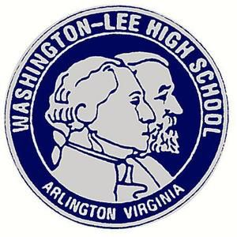
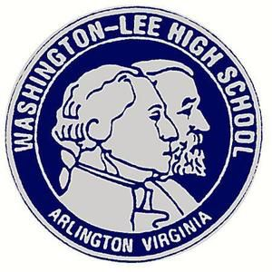

The National Honor Society is a nationwide organization for high school students in the United States and outlying territories, which consists of many chapters in high schools. Selection is based on four criteria: scholarship, leadership, service, and character.
*Colleges have an Honor Society, but with diferrent specifications and they are called something else, like a latin name of some sort or some other name thats not Honor Society.
For the 2018-2019 school year, students in grades 11-12 with a 3.5 GPA or higher are eligible to apply. Qualified students will receive a letter inviting them to apply in October and attend a mandatory informational meeting. Applications are due November 15th and students will be notified of their status prior to winter break. Applications are reviewed and scored by a selection committee made up of highly qualified faculty members. Students and families of those accepted are invited to attend the Induction Ceremony in February 11, 2019 at 7pm in the Auditorium.